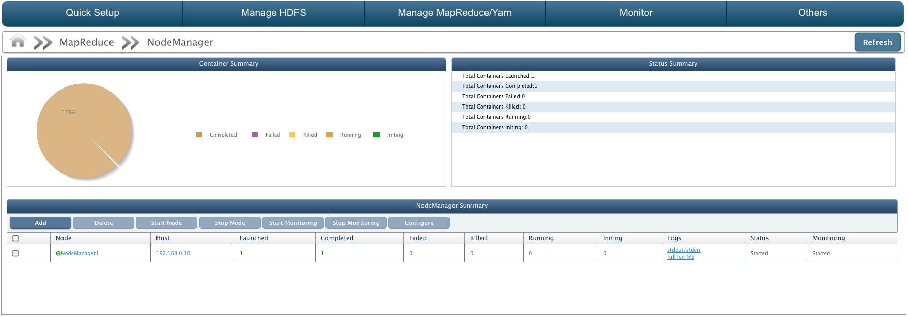
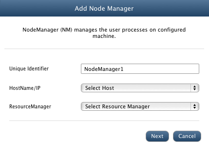
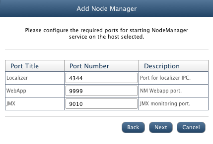
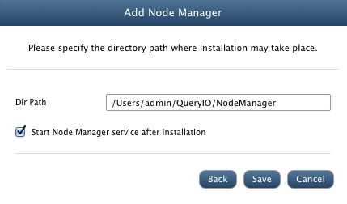
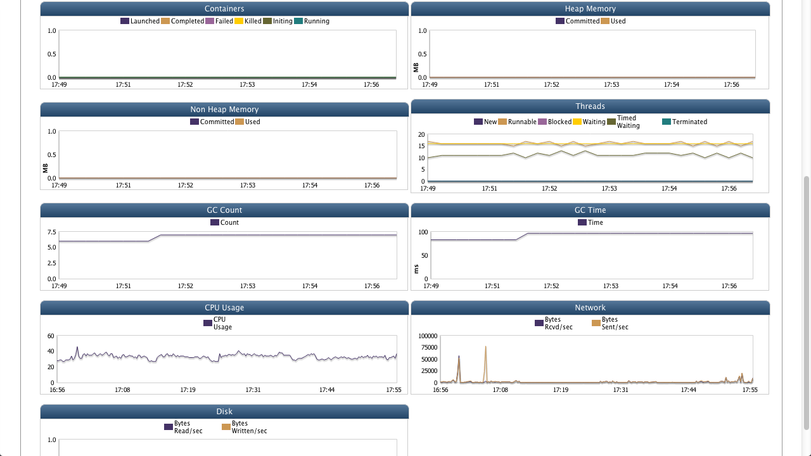

YARN NodeManager
In this chapter
This chapter explains about NodeManager and its related features
What is NodeManager
There is a per-machine NodeManager (NM) that manages the user processes on configured machine.
The ResourceManager and the NodeManager form the computation fabric of the cluster.
Each process started by the NodeManager is conceptually a container, or a bundle of resources
allocated by the ResourceManager. NodeManager consists of number of containers and an application master.

NodeManager Details
Following details about NodeManager are displayed.
- Container Summary: A pie chart displaying number of containers completed, failed, killed, running and initializing.
- Status Summary: Container details are displayed here.
- NodeManager Summary
Status Summary
- Total Containers Launched: Number of containers launched to execute MapReduce application.
- Total Containers Completed: Number of containers completed their job execution.
- Total Containers Failed: Number of containers failed to execute job.
- Total Containers Killed: Number of containers killed by NodeManager.
- Total Containers Running: Number of containers still running.
- Total Containers Initiating: Number of containers initiating.
NodeManager Summary
- Node: Unique ID of the NodeManager. Click on NodeManager name to view detailed summary.
- Host: IP Address of the host machine on which NodeManager is configured.
- Launched: Number of containers launched to execute MapReduce application.
- Completed: Number of containers completed execution.
- Failed: Number of containers failed.
- Killed: Number of containers killed by NodeManager.
- Running: Number of containers still running.
- Initiating: Number of initiating containers.
- Logs: Click to view full log file of stdout/stderr logs of NodeManager.
- Status: Status of NodeManager as 'Started' or 'Stopped' or 'Not Responding'.
- Monitoring: State of NodeManager monitoring i.e. whether NodeManager monitoring is started or stopped or not responding.
Add NodeManager
To add a new NodeManager, click on Add button on NodeManager page.
Enter following NodeManager details.
- Unique Identifier: Unique ID of the NodeManager.
- HostName/IP: Select host on which NodeManager will be configured.
- ResourceManager: Select ResourceManager.
- Click Next.

- Configure Ports: Enter ports for following.
- Localizer: Port for localizer IPC.
- WebApp: NM Webapp port.
- JMX: JMX monitoring port.
- Click Next.

- Dir Path: Installation path for the NodeManager on selected host.
- Start Node Manager after installation: Select check box to start NodeManager after installation.
- Click Save to install NodeManager.

Configure NodeManager
To configure the properties of NodeManager, select the check-box against target NodeManager and click Configure. All configurable properties of NodeManager will be displayed.
Start, Stop, Delete NodeManager
Select the NodeManager and click on Start, Stop or Delete to perform respective function.
Start/Stop Monitoring
JMX monitoring takes place which checks NodeManager's status, Launched, Completed, Failed, Killed, Running and Initiating containers. To start or stop NodeManager Monitoring, select the check box against the node and click on Start Monitoring or Stop Monitoring button respectively.
NodeManager Summary
NodeManager summary contains:
- Container Summary: A pie chart displaying container information.
- Status Summary: It has various details about NodeManager:
- Total Containers Launched: Number of containers launched to execute MapReduce application.
- Total Containers Completed: Number of containers completed execution.
- Total Containers Failed: Number of containers failed.
- Total Containers Killed: Number of containers killed by NodeManager.
- Total Containers Running: Number of containers still running.
- Total Containers Initiating: Number of containers initializing.
- Monitoring Data: Shows monitoring data of the NodeManager host machine. It uses JVM matrix to display data in form of charts. Time interval between which data is displayed can be varied from 1 day to 360 days.
This data is further used to generate reports and forecast. It can also be used diagnostic purposes.
Various charts displayed are:
- Containers:Number of Launched, Completed, Failed, Killed, Initiating, Running, Allocated, Pending, Reserved containers.
- Threads: Number of Running, Blocked, Waiting, Timed Waiting, Terminated, New threads with respect to time period.
- Heap Memory: Heap memory committed and heap memory used with respect to time in MB.
- Non Heap Memory: Non heap memory committed and used with respect to time in MB.
- GC Count: Total GC Count with respect to time.
- GC Time: Total time required for GC in ms.
- Network: Bytes received and sent through network in bytes/s.
- Disk: Bytes read and bytes written by user in Bytes/s.
- CPU Usage: Amount of CPU usage

Copyright © 2017 QueryIO Corporation. All Rights Reserved.
QueryIO, "Big Data Intelligence" and the QueryIO Logo are trademarks
of QueryIO Corporation. Apache, Hadoop and HDFS are trademarks of The Apache Software Foundation.